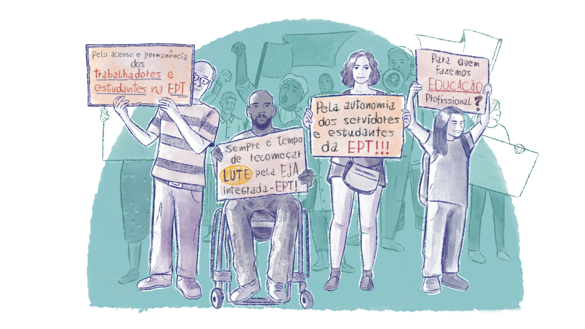

Transformações e exigências necessárias para uma educação democrática de qualidade
Para que se possa alcançar o almejado, de modo a contribuir com a qualidade do ensino e com a promoção da democratização da escola, Paro (2008) recomenda transformações na estrutura didática e administrativa que devem ser constantemente vigiadas e implementadas pelos sujeitos da EPT:
.png)
.png)
.png)
.png)
.png)
.png)
Título: Transformações e exigências necessárias para uma educação democrática de qualidade
Fonte: Paro (2008).
Elaboração: Prosa (2025c).
Estando atentos a estas transformações necessárias para uma educação democrática de qualidade e às outras transformações que chegam como exigência a cada ano na instituição – como foi o caso da pandemia, em 2020 –, os gestores educacionais estarão engajando mais pessoas na efetivação de uma educação de qualidade e de relações saudáveis no ambiente de trabalho e escolar. É importante ter uma escuta ativa para o que é fundamental, para além de questões técnicas e burocráticas, pois assim estará formando integralmente a si também. Ao pensar e inovar na gestão escolar e no desenvolvimento educacional, com participação e envolvimento de todos, serão promovidas aprendizagens e vivências que proporcionam preparação para a vida e o trabalho. Esses aspectos interagem e contribuem para a gestão escolar e o desenvolvimento educacional. As transformações não se restringem a um único espaço, mas abrangem amplamente a instituição, desde o currículo, passando pela forma de ensino, até o envolvimento da comunidade com a escola, valorizando os sujeitos da instituição escolar.
Gestão do direito na EPT: espaço de direitos, inclusão e pertencimento profissional
Seguindo a defesa da possibilidade de uma gestão com a valorização dos sujeitos que fazem a instituição, outro ponto importante a considerar é a gestão da escola pública e de EPT como espaço de direitos. (2020) discute isso ao abordar que, embora lutemos por um Estado de direitos e que tenhamos avançado na gestão da educação como um direito, a fragilidade desse compromisso dificulta a administração da escola pública como espaço de direitos quando o próprio Estado não se afirma como tal. Por isso, é necessário entender a história da gestão do direito à educação dos Outros desde a infância e a história da gestão do Estado na garantia-negação de “direitos básicos como direitos à terra, território, renda, trabalho, saúde, educação” (Arroyo, 2020, p. 770). O autor nos provoca a refletir:
Se pretendemos gestão da educação com justiça, comecemos por perguntar-nos se estamos em tempos de um Estado de justiça ou de produção de vítimas, injustiçados.
A partir desta instigação, surgem debates, defesas e bandeiras importantes, por exemplo: para quem fazemos Educação Profissional? Devemos questionar se ofertar o ou programas para estudantes em vulnerabilidade é apenas uma escolha ou se é uma oferta necessária, coerente com a missão das instituições federais, de modo que impulsione a buscar as melhores formas de incluir e promover o acesso e a permanência desses trabalhadores-estudantes nos cursos da instituição. Fazer gestão com os sujeitos e com a comunidade implica estar sempre sensível, propiciando debates e formações e, principalmente, defendendo a autonomia dos servidores e dos estudantes.
Assim, pela natureza do trabalho nas instituições da EPT, exige-se que pautas de direito e de inclusão sejam disputas de todos os servidores e, sobretudo, de quem se dispõe à gestão, propiciando formas cooperativas de organização do trabalho e da autoridade na escola (Paro, 2008). As instituições, inclusive, precisam de força para demandar que o Estado fomente essas políticas.

Título: Manifestação pela Educação Profissional e Tecnológica
Fonte: Prosa (2025e).
Dessa forma, quanto mais interação entre os sujeitos e espaços de participação forem construídos, mais desenvolvimento institucional, pertença profissional e engajamento serão alcançados. Veiga (2009) destaca que a educação de qualidade atinge seu sentido na prática pedagógica quanto mais interações são vivenciadas entre professores, estudantes, pais e responsáveis, técnicos administrativos e representantes da comunidade em todas as etapas da gestão escolar – nas experiências, processos e resultados. E, neste caminho, torna-se necessário romper com concepções conservadoras de educação que direcionam o trabalho pedagógico, bem como romper com concepções tradicionais de gestão das instituições.
Necessitamos formar, para além dos diferentes servidores, os coordenadores pedagógicos para uma gestão do pedagógico, pois são eles que realizam uma liderança na EPT, seja em âmbito de curso, de setor ou de instituição. Tornar-se sujeito da gestão do pedagógico exige que professores e servidores ressignifiquem sua condição de trabalhadores da educação, superando práticas automatizadas e sugerindo alternativas. Isso implica desconstruir a crença de que sua principal função é apenas planejar metodologicamente uma "boa aula". Embora esta seja uma parte importante, a gestão do pedagógico vai além, abrangendo a reconstituição do espaço da prática profissional pelos professores e servidores, estando fundamentada na ciência da Pedagogia, que orienta e articula o trabalho educacional. Nesse sentido, a gestão do pedagógico envolve a profissionalidade de todos os servidores, seus aportes teórico-metodológicos e os diversos aspectos que orientam e determinam tanto a produção das aulas quanto a construção do conhecimento (Ferreira, 2008).
Priscila Ritzel, em sua dissertação intitulada Gestão da/na Educação Profissional e Tecnológica: Reflexões sobre o Trabalho do Diretor Geral (2023), descreve uma vivência em uma instituição da EPT onde observou a saída de 25 estudantes da sala do diretor. No relato, estes estudantes, junto à equipe pedagógica, estavam discutindo ações para a não repetência. Ao ver saindo da sala do diretor aqueles que são o fim da educação profissional, ou seja, os estudantes, ela viu materializar-se uma frase de Saviani, a qual afirma que o diretor também é educador e seu trabalho precisa ser junto tanto a sua equipe quanto a seus estudantes (Ritzel, 2023).
Ao destacar o trabalho dos servidores e o trabalho do diretor e dos coordenadores na busca da valorização de todos na construção da gestão educacional, evidencia-se a necessidade do desenvolvimento de uma política educacional de formação tanto de gestores como de servidores para o trabalho na EPT, devendo ser uma prática também institucional que promova espaços de participação e de formação continuada. Esses espaços devem ser estimulados, com tempo estipulado nas jornadas de trabalho, para discussão de problemas e estratégias reais, optando sempre por vivências democráticas e experiências e aprendizagens coletivas.
Estes pressupostos e vivências confirmam o caráter inacabado dos sujeitos (Freire, 1996) e é preciso que todos se assumam dessa forma, seja o diretor geral, coordenadores, professores ou estudantes, pois só assim será possível ter a chance de, de fato, cada um acreditar no seu papel na gestão educacional da/na EPT e assumi-la.
Ao longo deste curso, convidamos você a explorar e refletir sobre diversas experiências que têm sido fundamentais para a construção de uma gestão democrática e eficaz na EPT. Dentre elas, estão as iniciativas de:
- Estratégias de construção participativas de estudantes na elaboração de regras ou de projetos;
- Formação continuada de servidores para a gestão democrática;
- Projetos de diferentes servidores para estímulo ao desenvolvimento de diferentes habilidades e formação;
- Promoção de espaços ou de projetos de formação integral;
- Inovação no ensino e na gestão da EPT;
- Incentivo à autonomia de docentes e discentes.
As reflexões sobre o trabalho pedagógico envolve os processos de ensino e aprendizagem que consideram as especificidades dos estudantes e as demandas do contexto. Através de diferentes abordagens, é possível entender como a educação pode estar alinhada com os objetivos da formação integral. A seguir, apresentamos algumas referências para aprofundar o estudo desse tema:
- FERREIRA, Liliana Soares. Trabalho Pedagógico na escola: do que se fala? Educação & Realidade, [s. l.], v. 43, n. 2, p. 591-608, jun. 2018.
- CARDOZO, Rodrigo Fuentes; SOARES, Liliana Ferreira. Trabalho pedagógico: dimensões e possibilidade de práxis pedagógica. Perspectiva, [s.l.], v. 35, n. 3, p. 722-737, dez. 2017.
- MARASCHIN, Mariglei Severo; FERREIRA, Liliana Soares Ferreira. Trabalho Pedagógico na EJA/EPT na perspectiva do currículo integrado. Revista Contrapontos, Itajaí, v. 19, n. 1, abr. 2019.
Isto posto, depois de ter refletido sobre o papel dos diferentes sujeitos na construção da gestão educacional, pense sobre como você contribui para a gestão da sua instituição e como você vê o diretor e os gestores.
Sugerimos que você elabore um pequeno texto e registre no seu Memorial e/ou siga as orientações do seu tutor.